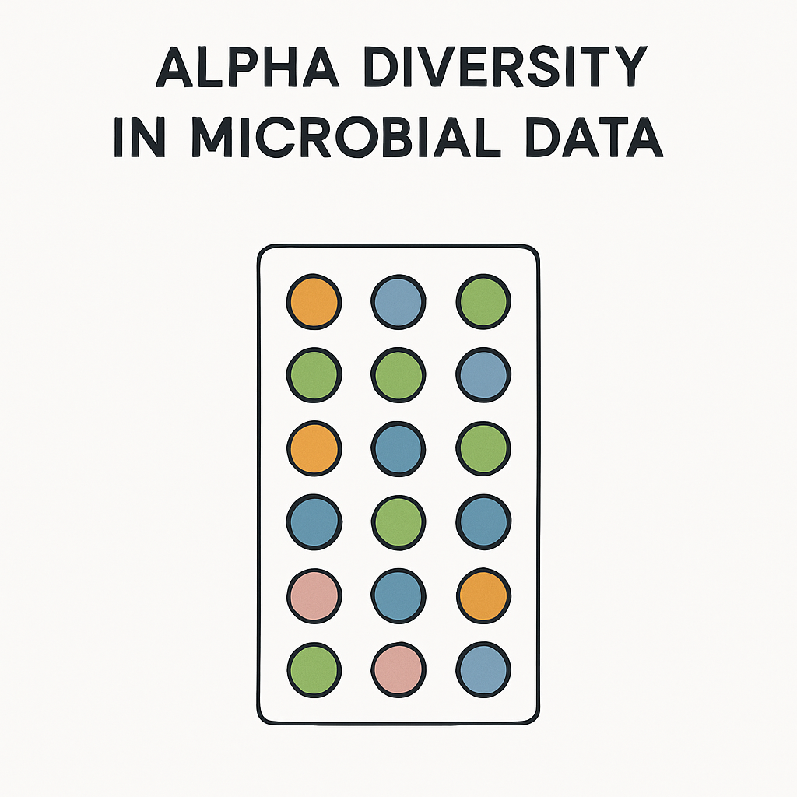

What is Alpha Diversity?
Alpha diversity, is diversity within a sample. It how diverse or rich your microbiome sample is in terms of different microorganisms.
Two important things are focused on:
- Species richness: the number of different species present in a sample. Abundance of species, nor their relative distributions are considered.
- Species eveness: a measure of relative abundance of different species that make up richness.
Common Alpha Diversity Metrics:
- CHAO1 Index: a non-parametric estimator used to estimate species richness (the total number of species actually in a community). Which is especially important when some species are rare and may not be observed.
- Shannon Index: a measure of diversity within a community, that considers both species richness and evenness. This is more sensitive to the presence of rare species. A higher Shannon index indicates greater diversity within a community.
- Simpson Index: a measure of diversity within a community, that considers both species richness and evenness. This is more sensitive to the dominance of a few species. A higher Simpson index indicates greater diversity within a community.
Now let’s take some time to go into each of these methods in detail:
CHAO1 Index
The CHAO1 Index is a non-parametric estimator used to measure species richness, focusing on the total number of Operational Taxonomic Units (OTUs), or Amplicon Sequence Variance (ASVs) in a sample. It is particularly useful in microbiome research, where the data are often highly skewed and many species are rare or underrepresented.
To put it in simple words, the CHAO1 index is brilliant for identifying rare species. To be specific it accounts for species that only appear once (singletons) or twice (doubletons) in a dataset, showing true total species richness.
The CHAO1 Index formula is:
\[ \text{CHAO1} = S_{\text{obs}} + \frac{F_1^2}{2F_2} \]
\[ S_{\text{obs}}= \text{Number of observed species (ASVs or OTUS)} \]
\[ F_{1} = \text{Number of singleton species (species observed only once)} \]
\[ F_{2} = \text{Number of doubleton species (species observed only twice)} \]
CHAO1 Index in action:
Let’s use this with some bacteria we found in the Darrington et al. (2022) dataset. This is based on relative proportions of bacteria, but that has been regenerated to generate total counts of bacteria.
Medfly from Morocco (Argan 🌰)
Bacterial composition counts, these counts are generated based on relative proportions:
| Bacterium | Count |
|---|---|
| Klebsiella | 270 |
| Pantonea | 54 |
| Commensalibacter | 36 |
| Spingomonas | 1 |
| Serratia | 1 |
| Acinetobacter | 2 |
| Delftia | 1 |
We first find our F1 values, these are our singletons - bacteria in our sample that only appear once. In our sample, we only have 3 of these (Spingomonas, Serratia and Delftia). \[ F_1 = 3 \\ \] We then find our F2 values, these are our doubletons - bacteria in our sample that only appear twice In our sample, we only have 1 of these ( Acinetobacter). \[ F_2 = 1 \\ \]
Now, let’s plug these into our CHAO1 formula: \[ \begin{align*} \text{CHAO1} &= 5 + \frac{3^2}{2 \times 1} \\ &= 5 + \frac{9}{2} \\ &= 5 + 4.5 = 9.5 \end{align*} \]
\[ \text{CHAO1} = 9.5 \]
What does this value mean?
A CHAO1 index value of 9.5 means the estimated total species richness (or number of OTUs/ASVs) in the sample is about 9.5 species. Although we saw there were 7 different species, our CHAO1 index tells us that there is likely a few more species that were not detected. This estimates reflects the statistical calculation.
CHAO1 has told us about, rare - possibly underrepresented samples. Keeping on the topic of investigating for rare species, I introduce to you; the Shannon Diversity Index. Although this metric is a measure of both species richness and eveness, it has a paritcular focus on rareity in samples.
Shannon Diversity Index
The Shannon Diversity Index accounts for both, how many species are present, and how evenly they are distributed. It summarises the diversity in the population while assuming all species are represented in a sample. Both for species richness and evenness.
The Shannon Diveristy formula:
\[ H' = -\sum_{i=1}^{S} p_i \log p_i \]
\[ {\text{H'}}= \text{Shannon diversity index} \]
\[ {\text{S}}= \text{Total number of species} \]
\[ p_{\text{i}}= \text{Relative proportion of individuals belonging to the species} \]
Let’s see this in action using this dataset:
Sample 1 - Medfly from Morocco (Argan 🌰)
Bacterial composition (relative proportions):
| Bacterium | Count |
|---|---|
| Klebsiella | 270 |
| Pantonea | 54 |
| Commensalibacter | 36 |
| Spingomonas | 1 |
| Serratia | 1 |
| Acinetobacter | 2 |
| Delftia | 1 |
Let’s first compute our relative proportions:
Our total count is: 270+54+36+1+1+2+1=365
| Bacterium | Count | pi |
|---|---|---|
| Klebsiella | 270 | 270/365 = 0.7397 |
| Pantonea | 54 | 0.1479 |
| Commensalibacter | 36 | 0.0986 |
| Spingomonas | 1 | 0.0027 |
| Serratia | 1 | 0.0027 |
| Acinetobacter | 2 | 0.0055 |
| Delftia | 1 | 0.0027 |
\[ \begin{aligned} &-0.7397 \times \log(0.7397) = 0.2221 \\ &-0.1479 \times \log(0.1479) = 0.2812 \\ &-0.0986 \times \log(0.0986) = 0.2280 \\ &-0.0027 \times \log(0.0027) = 0.0166 \\ &-0.0027 \times \log(0.0027) = 0.0166 \\ &-0.0055 \times \log(0.0055) = 0.0305 \\ &-0.0027 \times \log(0.0027) = 0.0166 \\ & \\ &H' = 0.2221 + 0.2812 + 0.2280 + 0.0166 + 0.0166 + 0.0305 + 0.0166 = \boxed{0.8116} \end{aligned} \]
Let’s test our R understanding by running it in there.
library(vegan)
bacteria_counts <- c(
Klebsiella = 270,
Pantonea = 54,
Commensalibacter = 36,
Spingomonas = 1,
Serratia = 1,
Acinetobacter = 2,
Delftia = 1
)
shannon <- diversity(bacteria_counts, index = "shannon")
shannon[1] 0.8112068Very cool, the R function confirms R calculations!
What does this value mean?
There is no strict limit of the Shannon Index, but limits can be from 0 (this would mean very low diversity), upwards of around 3 or 4 (meaning very high diversity). So our value of 0.7 would mean while there are clearly multiple species within our sample, there is uneven distribution and our diversity is not the highest.
Hopefully now that we understand the Shannon Index, we can move onto the final metric we are looking at, this is the Simpson Index. Like the Shannon index, it is a measure of diversity within a community, but rather than focusing on more rare species, it focuses on the more dominant species.
Simpson’s Index
The Simpson Diversity Index is used to calculate a measure of diversity, which takes into account the number of taxa, as well as abundance. If one type of microorganism dominates the sample - the simpson index will show lower diversity. Only a few rare species will not effect the diversity of a sample.
\[ D = 1 - _{}^{} \frac{n(n - 1)}{N(N - 1)} \]
\[ {\text{D}}= \text{Simpson's Index} \]
\[ {\text{n}}= \text{Number of individuals in single species} \]
\[ {\text{N}}= \text{Number of individuals in total population} \]
Let’s use our count data from earlier!
Sample 1: Medfly from Morocco (Argan 🌰)
Bacterial composition (relative proportions), these counts are generated based on relative proportions:
| Bacterium | Count (n) | n(n-1) |
|---|---|---|
| Klebsiella | 270 | 72,630 |
| Pantonea | 54 | 2,862 |
| Commensalibacter | 36 | 1,260 |
| Spingomonas | 1 | 0 |
| Serratia | 1 | 0 |
| Acinetobacter | 2 | 2 |
| Delftia | 1 | 0 |
| Total | N = 365 | n(n-1) = 76,752 |
\[ D = 1 - \frac{76752}{365(364)} = \frac{76752}{132860} = 0.5776908 \]
\[ D = 1 - 0.5776908 = 0.4223092 \]
Cool, our simpson’s index is 0.4223092
Now, I will be showing you how to do this in R. Using the vegan() package introduced earlier.
# Let's first put these counts into a dataframe.
bacteria_counts <- c(
Klebsiella = 270,
Pantonea = 54,
Commensalibacter = 36,
Spingomonas = 1,
Serratia = 1,
Acinetobacter = 2,
Delftia = 1)
# Then, using vegan(), we use diversity(), with the index "simpson"
library(vegan)
simpson_index <- diversity(bacteria_counts, index = "simpson")
simpson_index[1] 0.4211372Both calculating it ourselves, and using the R function, we get 0.42 - nice one!
Test your understanding!
What does Shannon Diversity look for?
What does the CHAO1 index look for?
What does the Simpson Index look for?
Both Shannon’s and Simpson’s indices measure community diversity by considering both species evenness and richness. What is the key difference between them?
Congratulations! You have now completed learning about Alpha Diversity, please click the button below to begin learning about Beta Diversity Analysis methods!